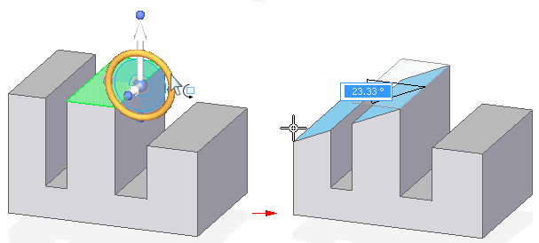
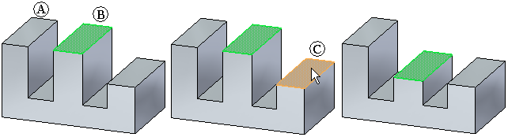

Defining relationships between model faces
You can modify synchronous models by defining relationships between model faces using the face relationship commands located on the Home tab→Face Relate group. The face relationship commands are available when one or more faces, or a reference plane is selected. You can use the options on the face relationship command bar to specify how you want the selected face(s) to be geometrically related with the target face. For example, you can use the Coplanar command to specify that the selected seed face (A) is made coplanar to a selected target face (B).

The Advanced Design Intent panel can also be used to control how the model reacts when you apply the relationship.
Face relationship types
Use the face relationship commands located on the Home tab→Face Relate group to apply the desired face relationship:
-
Concentric
-
Coplanar
-
Parallel
-
Perpendicular
-
Tangent
-
Rigid
-
Ground
-
Symmetric About
-
Equal Radius
-
Aligned Holes
-
Offset
-
Horizontal/Vertical
Persisting relationships
You can use the Persist option on a Face Relate command bar to specify that the relationship is maintained if you modify the model later. For example, when a coplanar relationship is persisted, if you use the steering wheel to rotate either of the related faces later, the faces will remain coplanar.

When you set the Persist option, the persisted relationship is added to the Relationships collection in PathFinder. You can delete the relationship by selecting it in PathFinder and pressing the Delete key. You can also delete the relationship using the Advanced Design Intent panel by clicking the check box for the face(s) that have the persisted relationship. If the Persist option is not set, you can modify the faces independently later.
Multiple element alignment
You can use the Single/All option on a Face Relate command bar to control how the relationship is applied when multiple elements are in the select set. When multiple elements are in the select set, the first element you select is considered the seed element. The seed element is displayed in a different color than the remaining elements in the select set.
-
Single
When you set the Single option, the existing spatial relationship between the seed element (A) and the remaining elements in the select set is not changed by the align operation. The seed element (A) is moved to apply the relationship you specified with respect to the target face (B). The remaining elements in the select set are also moved, but their current spatial relationship to the seed element is maintained. In this example, the coplanar relationship was applied.

-
All
When you set the All option, the spatial relationship between the seed element (A) and the remaining elements in the select set can be changed by the align operation. All the elements in the set are moved to apply the relationship you specified with respect to the target element (B). In this example, the coincident relationship was applied, and all faces in the select set were moved such that they are coincident (coplanar) to the target face (B).

Design Intent and applying relationships
When you apply relationships between faces, you can use the Advanced Design Intent panel to control how the model changes when you apply a relationship. For example, when applying a coplanar relationship between two model faces, if you clear the Coplanar option in the Design Intent panel or the Advanced Design Intent panel, other model faces (A) that are coplanar to the seed face (B) are not changed when you apply the relationship to the target face (C).

How do I
Define a relationship between two facesLook up more details
Coplanar commandCoplanar relationship command bar
Concentric command
Concentric relationship command bar
Symmetry command
Symmetry relationship command bar
Offset command
Offset relationship command bar
Parallel command
Parallel relationship command bar
Aligned Holes command
Aligned Holes relationship command bar
Equal Radius command
Equal radius relationship command bar
Perpendicular command
Perpendicular relationship command bar
Tangent command
Tangent relationship command bar
Horizontal and Vertical command
Horizontal and vertical relationship command bar
Ground command
Ground relationship command bar
Rigid command
Rigid relationship command bar